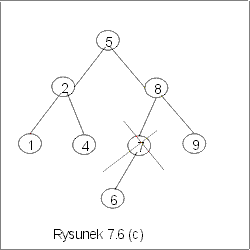

| « poprzedni punkt | nastêpny punkt » |
Operacja usuwania, delete, jest operacj± dwuargumentow±
delete : Et ´ BST ® BST.
Wynikiem delete(e,D) dla ustalonej etykiety e i drzewa binarnych poszukiwañ D, jest drzewo binarnych poszukiwañ D*, otrzymane z D przez usuniêcie etykiety e. Je¶li etykieta e nie wystêpuje w D, to wynikiem jest to samo drzewo D. W przeciwnym przypadku, wynikiem jest drzewo D*, które posiada te same etykiety co drzewo D z wyj±tkiem etykiety e, dok³adniej
Ø member(e,D*) Ù ("x¹e)(member(x,D) º member (x,D*))
Metoda
Idea usuwania jest nastêpuj±ca: najpierw znajdujemy wierzcho³ek v z etykiet± e oraz ojca tego wierzcho³ka, oznaczonego tu przez y. Je¿eli v jest li¶ciem, to wystarczy usun±æ w y referencjê do v. Je¿eli v ma tylko jednego syna, to usuniêcie wierzcho³ka v polega na zast±pieniu w y referencji do v, referencj± do jedynego syna wierzcho³ka v. Je¿eli v ma dwa nastêpniki, to znajdujemy w prawym jego poddrzewie wierzcho³ek w o najmniejszej etykiecie (lub dualnie, wierzcho³ek o najwiêkszej etykiecie w lewym poddrzewie). Zastêpujemy etykietê wierzcho³ka v znalezion± etykiet±, a wierzcho³ek w usuwamy z drzewa. Takie postêpowanie modyfikuje tylko w niewielkim stopniu strukturê drzewa: wierzcho³ek rzeczywi¶cie usuwany z drzewa znajduje siê zawsze na koñcu pewnej ¶cie¿ki. Operacja delete zwraca w wyniku drzewo, które jest argumentem tej operacji, je¶li e nie nale¿a³o do drzewa, lub, gdy drzewo by³o puste.
Przyk³ad 5.1
Proces usuwania elementu z drzewa BST przedstawiono na rysunku 7.6. Je¶li z drzewa na rysunku 7.6(a) usuwamy etykietê 6, to wynikiem jest drzewo na rysunku 7.6(b). Wierzcho³ek z etykiet± 6 jest li¶ciem, zostanie wiêc usuniêty z drzewa wraz z dowi±zaniem ³±cz±cym go z wierzcho³kiem 7. Je¶li z drzewa 7.6(a) usuwamy wierzcho³ek z etykiet± 7, to poniewa¿ ma on tylko jeden nastêpnik, w wyniku usuniêcia etykiety 7, lewym synem wierzcho³ka 8 bêdzie wierzcho³ek z etykiet± 6, jak na rysunku 7.6(c). Je¶li z drzewa 7.6(a) usuwamy etykietê 5, to poniewa¿ wierzcho³ek z t± etykiet± ma dwa nastêpniki, etykieta 5 zostanie zast±piona najmniejsz± etykiet± prawego poddrzewa, tzn. szóstk±, a wierzcho³ek z etykiet± 6 zostanie usuniêty z drzewa. J
|  |
Algorytm usuwania
W przedstawionym kodzie zak³adamy, ¿e root jest korzeniem niepustego drzewa binarnych poszukiwañ D. Algorytm usuwania, podobnie jak algorytm wstawiania, jest modyfikacj± algorytmu member, poniewa¿ musimy ustaliæ, czy, i ewentualnie gdzie, znajduje siê usuwana etykieta. Zapamiêtujemy dodatkowo ojca (na zmiennej y) aktualnie odwiedzanego wierzcho³ka v, po to, by umo¿liwiæ konieczne modyfikacje zwi±zane z usuniêciem etykiety e.
| node delete(e : Et, root : node) { | |||
| bool := false; y := null; v := root; | 1 | // y jest ojcem wierzcho³ka v | |
| while (not bool) do | 2 | ||
| if (v.val = e) then | 3 | // e jest etykiet± wierzcho³ka v | |
| if (v. left = null or v.right = null) then | 4 | //v ma co najwy¿ej jednego syna | |
| usun(y,v); | 5 | ||
| else | //(v.left ¹null and v.right ¹null) | ||
| z := v.right; pred := v; | 6 | ||
| while (z.left ¹ null) do | 7 | //szukamy minimum w PD(v) | |
| pred := z; z:= z.left | 8 | ||
| od; | 9 | ||
| et := val(z); usun(pred, z); | 10 | //usuwamy wierzcho³ek z | |
| v.val := et; bool := true; | 11 | //zmieniamy etykietê wierzcho³ka v | |
| fi; | 12 | ||
| else | // v.val ¹ e | ||
| if (v.val <e) then | 13 | ||
| if (v.right ¹null) then | 14 | //bêdziemy przeszukiwaæ PD(v) | |
| y := v; v := v.right | 15 | ||
| else bool := true | 16 | ||
| fi | 17 | |
|
| else | // v.val > e | ||
| if (v.left ¹null) then | 18 | //bêdziemy przeszukiwaæ drzewo LD(v) | |
| y := v; v := v.left | 19 | |
|
| else bool := true | 20 | ||
| fi | 21 | |
|
| fi | 22 | |
|
| fi | 23 | |
|
| od | 24 | |
|
| fi; | 25 | ||
| return root } | 26 | |
|
Najistotniejsza czê¶æ prezentowanego algorytmu znajduje siê w liniach 3-12. W tych liniach opisane s± zmiany, których trzeba dokonaæ, gdy znajdziemy wierzcho³ek z etykiet± e, zapamiêtany w tym algorytmie na zmiennej v. Rozwa¿amy dwa przypadki: gdy v ma co najwy¿ej jeden nastêpnik i, gdy v na dok³adnie dwa nastêpniki. W obu przypadkach musimy z drzewa usun±æ jeden wierzcho³ek. Poniewa¿ sam proces usuwania jest podobny, chocia¿ dotyczy ró¿nych wierzcho³ków, wyodrêbnili¶my ten fragment kodu w postaci procedury usun. Tre¶æ tej procedury jest do¶æ k³opotliwa, gdy¿ musimy rozwa¿yæ kilka przypadków.
Parametrami procedury s± dwa wierzcho³ki y i v. Zak³adamy, ¿e sk±din±d wiadomo, ¿e y jest ojcem v, oraz wierzcho³ek v ma co najwy¿ej jeden nastêpnik. Ten ew. jedyny nastêpnik ma zast±piæ v. W procedurze usuñ zapamiêtali¶my ten wierzcho³ek na zmiennej x. Wyró¿niamy przypadek, gdy v jest korzeniem, gdy¿ wtedy musi byæ zmieniony korzeñ drzewa. Je¶li v nie jest korzeniem drzewa, to ojcu wierzcho³ka v przekazujemy wierzcho³ek x na miejsce wierzcho³ka v.
| usuñ(y:node, v : node) { | |||
| if (v. left ¹ null ) then x := v.left else x := v.right fi; | |
||
| if (y = null) then | //v jest korzeniem drzewa | ||
| root := x | |
||
| else | |
||
| if (y.left ¹ null) and (y.left.val = v.val) then | //v jest lewym synem y | ||
| y.left := x | |
||
| else | //v jest prawym synem y | ||
| y.right:= x | |
||
| fi; | |
||
| fi} |
|||
W liniach 6-12 rozwa¿any jest przypadek, gdy wierzcho³ek v, dla którego v.val = e, ma dwóch synów. W przedstawionym kodzie, zastêpujemy etykietê wierzcho³ka v, najmniejsz± z etykiet jego prawego poddrzewa. W pêtli w liniach 7-9 znajdujemy wierzcho³ek z, którego etykieta ma najmniejsz± warto¶æ w PD(v), oraz, na zmiennej pred, ojca tego wierzcho³ka. Zauwa¿my, ¿e z albo jest li¶ciem, albo ma tylko prawy nastêpnik. Usuwanie wierzcho³ka z mo¿emy wiêc zrealizowaæ za pomoc± procedury usun(pred,z).
Koszt alorytmu
Koszt algorytmu jest zdeterminowany przez proces wyszukiwania elementu e i jest proporcjonalny do wysoko¶ci drzewa. W najgorszym razie jest to koszt O(n), gdzie n jest liczb± wierzcho³ków w danym drzewie. Koszt ¶redni jest natomiast logarytmiczny O(lg n).
Pytanie 8: Utworzono drzewo BST przez wstawianie kolejno elementów 4, 2, 8, 7, 5, 6, 9, 6 Jaka etykieta znajdzie siê w wierzcho³ku drzewa, je¶li z tego drzewa usuniêto etykietê korzenia stosuj±c algorytm delete?
| « poprzedni punkt | nastêpny punkt » |